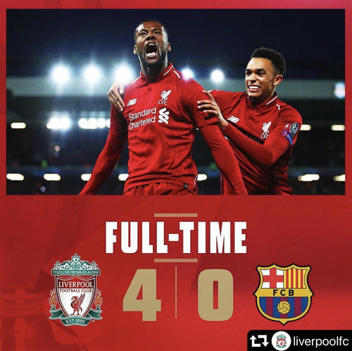
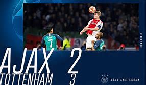

In the second round of UEFA semi-final, Liverpool FC defeated Fc Barcelona by 4:0 at Home, which reversed the total score of 0:3 from the first round. Their finished a mission impossible!
-------------------------

So did Tottenham Hotspur, they win Ajax in 3:2 at away.They lost at home with a score of 0:1, and their advanced with 3 goals at away, while Ajax only have one. It's just like Liverpool, they've done a reverse.